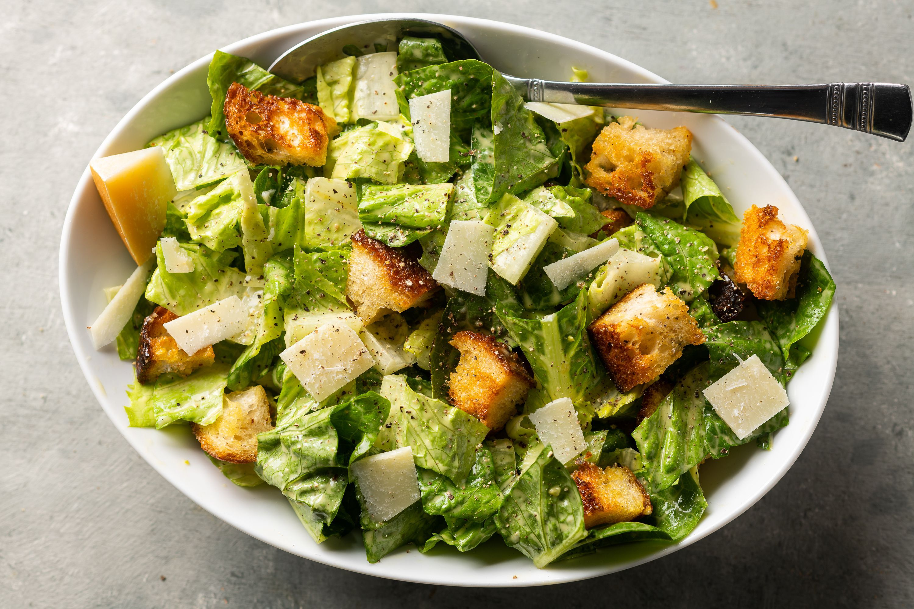
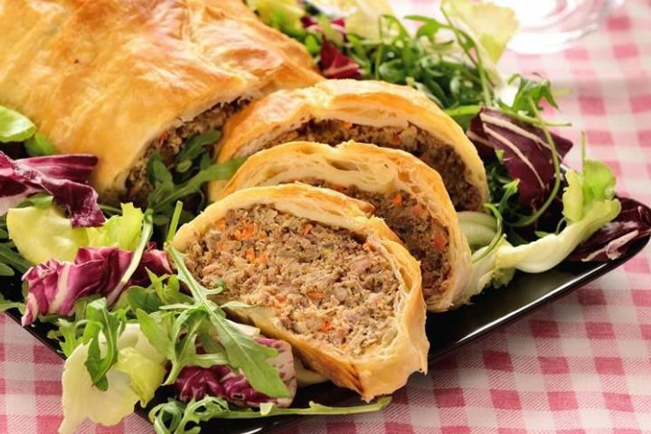

Make perfect Napoletana Pizza at home with this classic recipe!
Including a pizza dough recipe, topping suggestions, and step-by-step instructions with photos.
Ingredients for the dough:
800 gr of “00” flour
2 gr of fresh brewer’s yeast
10 gr of sugar
500 gr of water
25 gr of olive oil
Ingredients for the topping:
100 gr of tomato pulp
200 gr of Mozzarella di Bufala Campana DOP
Basil
Instructions:
Put half of the flour in the mixer bowl. With floured hands, crumble the brewer’s yeast inside.
The yeast must be put in the flour because it contains the sugars necessary for the yeast.
Separately, dissolve the salt into water and pour it into the mixture. Start kneading, after 1 minute
addthe sugar, then, when it has been absorbed, add the rest of the flour.
Make the dough sit for about ten minutes. Finally add the extra virgin olive oil and knead until absorbed.
Place the dough on a floured surface and work with two hands kneading for about 5-10 minutes.
Put the dough in a glass bowl with a slightly oiled base, cover with a cloth and let it rise for about 30
minutes in a warm place.
Take the dough again, form a loaf and divide it into about 6 pieces.
Make balls and put them under heat covered by a cloth, and let them rise for about 6-8 hours.
After the dough has risen, bring the oven to max temperature and wait until the oven is hot.
To shape the pizzas, spread them on a floured surface and push with your fingers 2-3 times forward then turn
the pizza over and do the same on the other side.
The pizza will be thinner in the center and with a nice higher edge.
Season the tomato with salt, a little extra virgin olive oil and a few basil leaves, and cut the mozzarella
into strips.
Season the pizzas with a generous spoonful of tomato.
Spread it on the pizza with the spoon
itself but without reaching the edge. Add the mozzarella, a few basil leaves and a drizzle of extra virgin
olive oil and bake each pizza by placing it on a pizza stone.
In this case it will take about 6-8 minutes.
Or bake in round trays and cook until golden brown.
Vegetarian Cesar Salad

A delicious and tastyVegetarian Salad
Here is a vegetarian tasty for the classic caesar salad. It's simple, quick and so delicious!
Ingredients for the salad:
Lettuce
Croutons
Permesan Cheese
Ingredients for the dressing:
Mayonnese
Olive Oil
Garlic
Lemon Juice
Dijon Mustard
Parmesan Cheese
Red Wine Vinegar
Seasoning
Water
Instructions:
In a bowl, add all the ingredients for a caesar dressing.
Whisk until well combined. Creamy caesar salad dressing is ready! Store it refrigerated until ready to use.
First, cut the top wilted part of the lettuce. Discard it. Throw away the outermost layer of lettuce if it
looks spoiled or spotted.
Now make 4-5 slits lengthwise all around the lettuce.
Chop the lettuce into bite-sized pieces starting from the leafy end and moving towards the core end. Discard
the core end
Place the chopped lettuce in a colander or a salad spinner. I am using a salad spinner here. Fill with cold
water and add salt to it. Leave the greens in cold salted water for 1-2 mins. It helps draw out many
bugs. Rinse gently.
Drain the water completely, and repeat the rinse cycle if needed depending on how dirty the lettuce is.
Now dry the lettuce thoroughly. I like to use my salad spinner for this. Alternately you can also spread the
washed drained lettuce leaves on a paper towel and /or blot or pat dry with a paper towel.
Add the clean, dry lettuce to a large serving bowl.
Sprinkle generously with shredded parmesan cheese and crunchy croutons.
Drizzle in the veg caesar dressing.
Toss gently until lettuce is evenly coated.
Vegan "Beef" Wellington

Different and Tasty Vegan "Beef" Wellington
A wellington is prepared meaty filling with a thin layer of mushroom paste, wrapped in a puff pastry
Ingredients:
1 sheet vegan puff pastry
2 tablespoons ground flax meal + 5 tablespoons water
2 tablespoons grapeseed oil , or preferred cooking oil
1 15 oz can chickpeas (garbanzo beans) , drained well but NOT rinsed
¾ cup unsalted walnuts , ground into a course meal (measured whole)
½ cup panko breadcrumbs , more if needed
2 tablespoons tomato paste
1.5 tablespoons vegan worcestershire sauce
½ teaspoon salt , more to taste
Fresh cracked pepper , to taste
1 tablespoon vegan butter , melted
Instructions:
Preheat oven to 400 °F (200 °C). Line a rimmed baking sheet with parchment paper and set aside.
Combine the ground flax and water in a small bowl. Set aside for 10 min. It will thicken and gel up a bit.
Heat oil in a large skillet over medium heat. Now add onion, celery, and carrots. Sauté until softened about
6-8 minutes.
Add garlic, thyme, sage, and rosemary. Sauté for 1 minute.
Add mushrooms and sauté until they soften and release their moisture about 5-7 minutes. You want the pan to
be dry. Now add the tamari and cook for 1 minute. Remove from heat and set aside to cool for
10 minutes.
Add chickpeas to a large mixing bowl and mash with a potato masher. Don't over mash - just mash enough to
break down whole chickpeas, but leave lots of texture.
Now add the cooled mixture, breadcrumbs, walnut meal, flax mixture, Worcestershire, tomato paste, salt, and
pepper. Combine well with a spatula and use your hands if needed. Taste and add more seasoning if
preferred. (If the mixture seems too wet, you can add another ¼ cup of breadcrumbs or rolled oats - You
should be able to form it with your hands easily)
Using your hands, shape the mixture into a solid log that will fit in the middle of the pastry sheet (with a
few inches of slack). Make sure log is packed well.
Unroll puff pastry sheet and lay it over the baking sheet (or a flat surface if you need to roll it first).
Place the loaf in the middle of the pastry sheet. Pick up one side and wrap it over the loaf and repeat
on the other side. Gently press to seal together (don't force if it doesn't close, just thin & lengthen the
loaf or remove some mixture and form again). *If pastry doesn't seal easily, just lightly brush
a little non-dairy milk in that area and seal.
Now roll up the ends and press gently to seal. If you have a lot of extra length, you may want to trim the
dough first before sealing. Otherwise, the ends of the loaf will be very doughy. Flip the loaf over so
the sealed edges are facing the baking sheet.
Brush the top and sides with melted vegan butter. Using a sharp knife, gently make diagonal slits across the
whole top of loaf about 1-inch apart. Now repeat going the other direction to criss-cross slits (see
process photos in post above).
Place in the oven for 30-35 minutes until heated throughout and the pastry is golden brown. Let sit 10
minutes before gently cutting with a sharp knife.
For recipe's font websites, click on the links below: